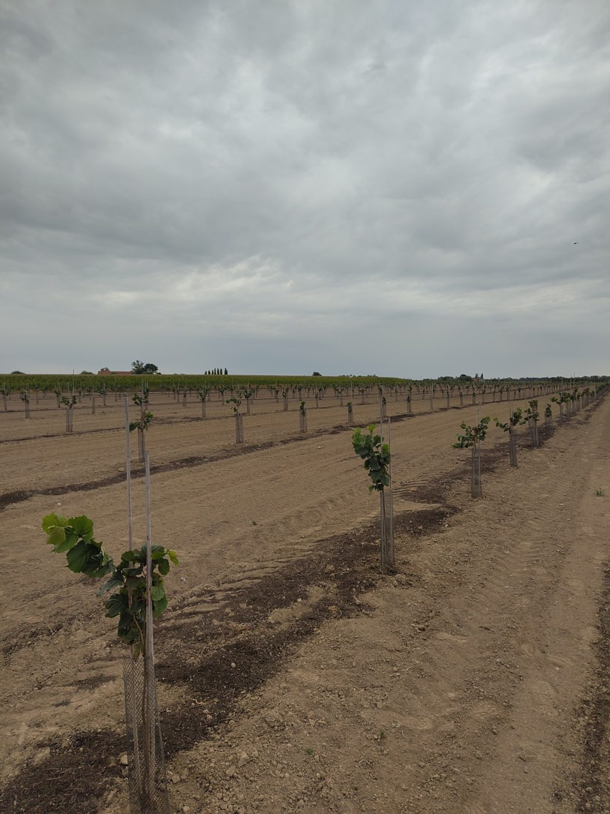

Belgische hazelnoten
Een nieuwe standaard voor Belgische hazelnoten.
Met zorg geteeld op eigen bodem.
Ontdek ons verhaal
Van boomgaard tot product
Met aandacht voor elke stap.
01 · Teelt
Verschillende hazelnootrassen, geteeld op onze eigen percelen.
02 · Ontwikkeling
We experimenteren met verwerking en smaakcombinaties.
03 · Toekomst
We bouwen aan een lokaal aanbod van verfijnde hazelnootproducten.